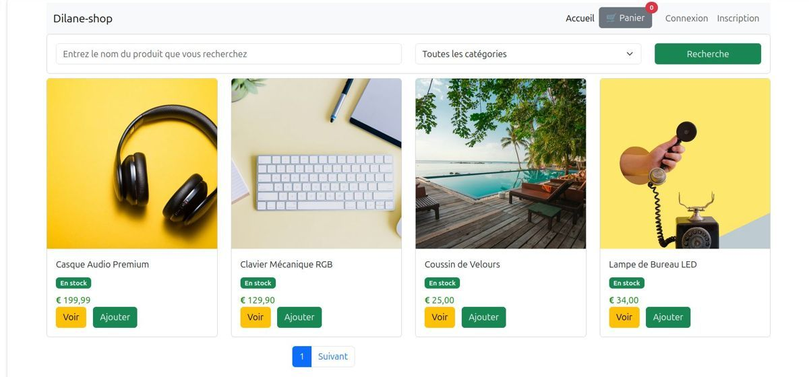

Infrastructure · haute disponibilité
Dilane Shop
Une boutique en ligne complète (catalogue, panier, paiement Stripe, stocks) que j’héberge et exploite moi-même sur un serveur privé.
- Kubernetes léger (k3s) sur un VPS OVH : plusieurs copies de l’application, sondes de santé, mises à jour sans coupure.
- Exposition HTTPS avec ingress-nginx et des certificats Let’s Encrypt renouvelés automatiquement (cert-manager).
- Intégration continue qui bloque toute faille : analyse des dépendances (pip-audit), du code (Bandit) et de l’image Docker (Trivy), tests dans l’image, publication sur GHCR.
- Secrets chiffrés dans le dépôt (SOPS et age), supervision Prometheus et Grafana avec alertes par courriel.
- Première version sur AWS EC2, créée avec Terraform (projet Afrolink).
GitHub ActionsGHCRk3s · VPS OVHingress-nginx + TLSPrometheus · Grafana
